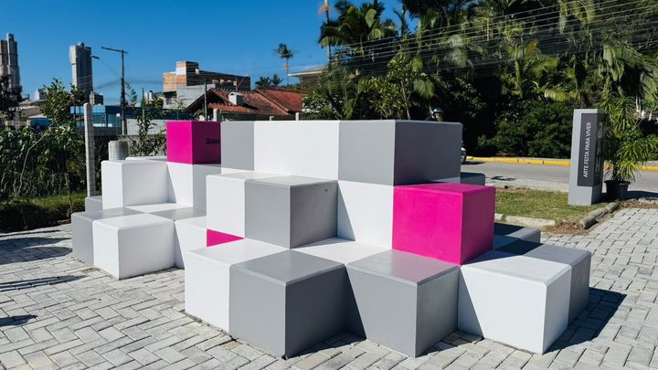
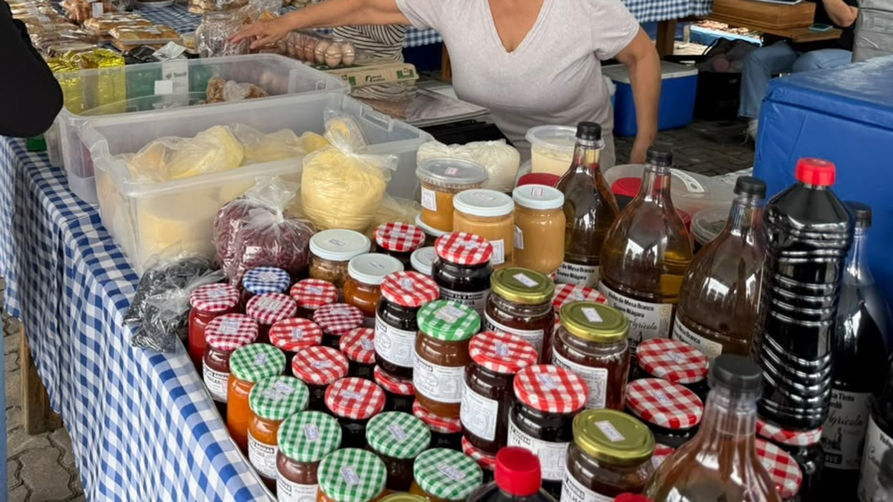

Itapema · InfraestruturaJá são quatro os túneis da BR-101 em Itapema com empresa querendo adotar, e o aviso dos dois mais novos abre prazo nesta terça
Como funciona o programa que põe empresa para cuidar de espaço público.
A Prefeitura entregou neste sábado, 3 de outubro, a Praça Espaço do Produtor revitalizada, entre as Ruas 232 e 234, na Meia Praia, com bancos, tendas, sombreiros e parquinho novos, pagos pela Seanet Telecom. Fomos ao Diário Oficial dos Municípios e reunimos os cinco avisos do programa Adote uma Área Pública publicados desde maio de 2025: são nove espaços e seis empresas. Esta praça não está em nenhum deles.
Em 30 segundos · Modo de Leitura, formato original Santa Informa
A Praça Espaço do Produtor fica na Meia Praia.
É entre as Ruas 232 e 234, em Itapema.
Ali os produtores da cidade vendem.
Verdura, peixe, queijo, geleia, mel, artesanato.
A praça foi reformada e entregue neste sábado, 3 de outubro.
Ganhou bancos, mesas, tendas e sombreiros.
E um parquinho novo para as crianças.
Quem pagou foi uma empresa, a Seanet Telecom.
Não foi dinheiro do caixa da Prefeitura.
Isso já aconteceu outras vezes aqui.
O programa se chama Adote uma Área Pública.
A empresa cuida do espaço e assina um termo.
Antes disso sai um aviso no Diário Oficial.
O aviso serve para outra empresa poder disputar.
Fomos ler todos os avisos de Itapema.
Desde maio de 2025 saíram cinco.
Eles somam nove espaços e seis empresas.
Dois parques entre as Ruas 223, 225, 265 e 267.
Um parquinho na Rua 165, na Orla do Centro.
Outro parquinho entre as Ruas 268 e 270.
Os túneis da BR-101 nos KM 146, 147, 150 e 152.
A servidão de pedestres da Rua 109.
E a praça da Rua 716, no Bairro Várzea.
A Praça Espaço do Produtor não está em nenhum.
Procuramos também pelo nome da empresa.
"Seanet" e "SN Internet" não aparecem em Itapema.
Isso não quer dizer que haja irregularidade.
Existe mais de um caminho legal para uma parceria.
Mas a nota da Prefeitura não diz qual foi.
E também não diz quanto a obra custou.
A conta dos cinco avisos é nossa.
Ela não está somada em lugar nenhum.
InfraestruturaPublicada em Redação Santa Informa

A Praça Espaço do Produtor fica entre as Ruas 232 e 234, na Meia Praia, e é onde os produtores rurais, pesqueiros e artesanais de Itapema vendem o que fazem. Neste sábado, 3 de outubro, a Prefeitura entregou a praça revitalizada, com bancos, mesas, tendas, sombreiros e um parquinho infantil novos. A obra foi bancada pela Seanet Telecom, empresa de internet, e não pelo caixa do município.
Para quem trabalha ali, o que mudou tem nome: cobertura. A presidente da Associação dos Produtores Rurais, Pesqueiros e Artesanais de Itapema, Senhorinha Margarida Batista, disse na entrega que a chuva sempre foi a dificuldade do grupo, e que muitas vezes não dava para trabalhar por falta de estrutura. A secretária de Turismo, Pati Marin, e o diretor da empresa, Otávio Martins, também falaram na entrega.
Itapema tem um programa para isso, o Adote uma Área Pública, com base na Lei Municipal 4.711/2025 e no Decreto 091/2025. Ele funciona assim: a Prefeitura publica no Diário Oficial dos Municípios o interesse de uma empresa, abre alguns dias para quem quiser disputar e, no fim, assina um termo. Fomos ler todas essas publicações da entidade Prefeitura municipal de Itapema. Desde 21 de maio de 2025 saíram cinco avisos, que somam nove espaços e seis empresas: dois parques entre as Ruas 223 e 225 e entre as 265 e 267, o parquinho da Rua 165 na Orla do Centro, o parquinho entre as Ruas 268 e 270, os túneis da BR-101 nos quilômetros 146, 147, 150 e 152, a servidão de pedestres da Rua 109 e a praça da Rua 716, no Bairro Várzea. A Praça Espaço do Produtor não aparece em nenhum deles, e a busca pelos nomes Seanet e SN Internet na entidade Itapema não devolve resultado.
O resumo de 30 segundos está no topo e a versão completa é o texto acima. Aqui ficam as três leituras da casa sobre o mesmo assunto.
Clara, a otimista
Quem vende na Praça Espaço do Produtor perdia o dia quando chovia. Agora tem cobertura, mesa, banco e sombra. É pouco dinheiro para a cidade e é muito dinheiro para quem levanta às quatro da manhã para colher ou pescar e precisa vender até o fim da tarde.
E repare numa coisa boa: a conta não saiu do caixa de Itapema. Empresa que ganha dinheiro na cidade colocando internet nas casas devolveu um pedaço em forma de praça. Se virar hábito, a cidade ganha duas vezes.
Seu Prudêncio, o criterioso
Merece atenção o caminho escolhido. Itapema montou um rito bonito para esse tipo de parceria: publica o interesse, abre prazo, assina termo. Esse rito protege os dois lados, porque deixa claro quem cuida do quê e por quanto tempo, e permite que outra empresa apareça e ofereça mais. Nos outros nove espaços ele foi seguido e está no Diário para qualquer um conferir.
Vale acompanhar o que vem agora. Uma sugestão útil: publicar o valor investido e o documento da parceria, seja termo de adoção, convênio ou doação. Sem isso, daqui a dois anos, quando um banco quebrar ou a tenda rasgar, ninguém vai saber de quem é a obrigação de consertar, e aí a conta volta para o município sem aviso.
Dito isso, reconheço o acerto. A praça precisava de cobertura havia tempo, a entrega veio com estrutura de verdade e não com placa, e o grupo que mais usa o espaço foi ouvido na hora da entrega. Obra feita é obra feita.
Caco, o sarcástico
A praça ficou linda e ficou azul. Banco azul, mesa azul, guarda-sol azul, balão azul. Por uma coincidência extraordinária, é exatamente o azul da empresa que pagou. A natureza é mesmo cheia de simetrias.
Também achei elegante o detalhe de o nome da empresa estar escrito na lateral de cada banco. Assim, enquanto você come o pão de mel do produtor, fica sabendo quem instala a sua internet. Chamam isso de espaço de convivência.
Agora o lado bom, e ele existe. Antes dessa reforma, dona Senhorinha e os colegas guardavam a mercadoria quando o céu fechava. Hoje não guardam mais. Se o preço disso foi um banco azul com logo, eu pago, e ainda levo geleia.
Fontes: a entrega, o endereço, a lista do que foi instalado e as falas estão na nota da Prefeitura de Itapema publicada em 3 de outubro de 2026. Os cinco avisos do programa estão no Diário Oficial dos Municípios de Santa Catarina, na entidade Prefeitura municipal de Itapema: Edital de Chamamento Público 01/2025, de 21 de maio de 2025, aviso de 14 de outubro de 2025, aviso de 5 de dezembro de 2025, aviso de 17 de julho de 2026 e aviso de 28 de setembro de 2026. As buscas por "Seanet" e por "SN Internet" foram feitas no mesmo Diário, restritas à entidade de Itapema, em 3 de outubro de 2026, e não devolveram resultado. O processo de Penha está no parecer da Manifestação de Interesse Público 0006/2026, de 8 de julho de 2026, e no plano de trabalho publicado em 16 de julho. Os R$ 307,9 mil da Praça Edegar Von Buettner estão na nossa matéria de 25 de setembro, e a contagem dos túneis da BR-101 está na nossa matéria de 28 de setembro. A soma dos cinco avisos, dos nove espaços e das seis empresas é conta nossa.

Itapema · InfraestruturaComo funciona o programa que põe empresa para cuidar de espaço público.
 Itapema · Infraestrutura
Itapema · InfraestruturaA outra praça de Itapema que saiu do papel neste mês, essa com dinheiro público.
 Itapema · Poder Público
Itapema · Poder PúblicoQuanto custa, em dinheiro público, equipar uma praça da cidade.